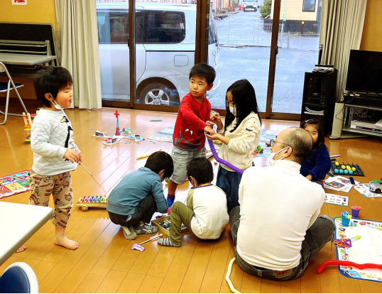
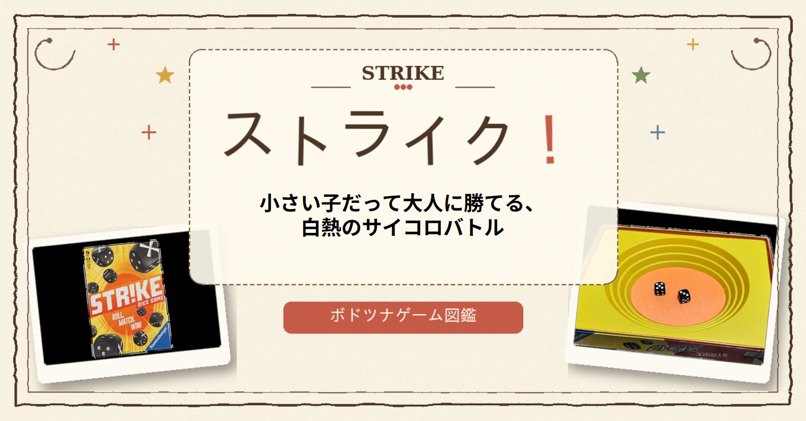
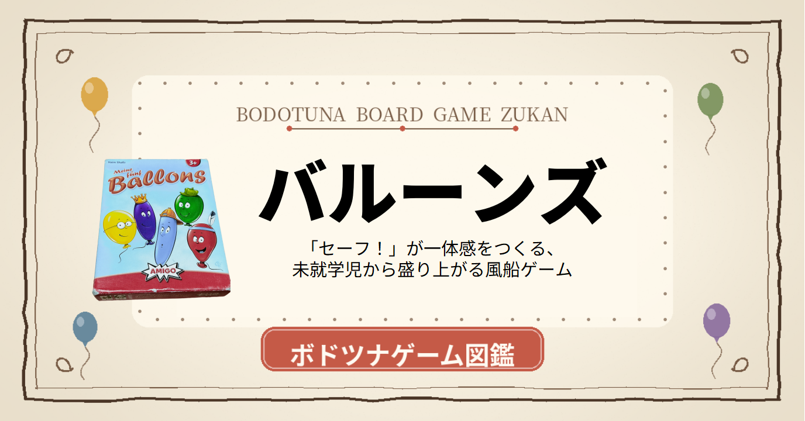

藤沢市を中心に、子育て中の保護者・不登校の子どもたち・HSP・LGBT当事者など、
相談相手や理解者に恵まれない方々が頼れる『安全基地』を運営しています。

頼れる人が、近くにいない時代に。
私が住んでいるアパートの下の部屋から、赤ちゃんの泣き声が聞こえてきました。毎日毎日、毎晩毎晩、赤ちゃんは激しく泣いていて、それをあやしているお母さんの声も聞こえてきました。2階の私の部屋まで聞こえてきて、目が覚めるくらいです。
ある朝、出勤のため外に出ると、1階の奥さんが赤ちゃんを抱っこして立っていました。「こんにちは」と声をかけると、目にクマができ、やつれた表情で「すみません、いつもうるさくて」と小さな声で返事をしてきました。引っ越してきた時に挨拶をした時とはまるっきり違う表情で、だいぶ精神的に参っているようでした。
夜になって私が仕事から帰ると、その家の旦那さんが玄関先で煙草を吸っていました。「奥さん大丈夫ですか？ だいぶ参ってるようでしたけど」と伺うと、旦那さんは拍子抜けするほど軽いノリで「えー、だいじょうぶっしょ〜」と笑って返してきました。
育児に対する姿勢は、男女でこうも違うものなんだと痛感しました。
先日、その部屋から荷物を運び出していたので尋ねると、奥さんの体調が悪く、実家近くに引っ越すことにしたそうです。頼れる人が近くに住んでいて良かった——私はそう安堵しました。
でも、もしご両親に頼れなかったら、どうなっていたのでしょうか。
そうして起きているのが、ネグレクトやDVではないでしょうか。
子育てに限らず、世の中には相談しにくいことや、理解者に恵まれないことが沢山あります。引きこもり、子どもの貧困、自傷行為、HSP、LGBT、蛙化現象——
もしもボードゲーム会という『遊びの場』が、相談しにくいことを相談できるコミュニティになったとしたら、気持ちが楽になる人がいるかもしれません。ネグレクトやDVのような事件が1件でも減るかもしれません。
気楽に集まれる場所。集まっても気楽な場所。
それをつくりたくて、ボドツナは生まれました。
ボードゲームでツナグ手 代表 長山 陽司
ボードゲーム会を通じて、頼れる場所をつくります。
ボドツナの目的は、ボードゲーム会を通じて、以下のような困りごとを抱える方々が頼れる『安全基地』を創造することです。
藤沢市内で、月10回以上のイベントを開催しています。
レインボースマイル湘南主催の子育てひろば＆フリースペース。子ども食堂も併設しています。
藤沢市 七ツ木市民の家にて。1歳のお子様からシニアまで遊べるフリースペース。参加無料・予約不要。
駄菓子のついでに、親子で楽しめるボードゲームを体験できます。ドキワクランド駐車場利用可。
地域福祉活動センター（藤沢市役所分庁舎）・湘南台市民センターにて。藤沢市後援。非認知能力を育てる教室。
子どもたちと一緒にボードゲーム制作・動画制作を体験するプログラム。生きづらさを抱える方の社会との接点づくりも。
居場所イベントで使っているゲームを、noteで詳しく紹介しています。

サイコロひとつで世代がまざる、助け合いすごろく
noteで読む
小さい子だって大人に勝てる、白熱のサイコロバトル
noteで読む
色が分かれば3歳から！運だけで決まる風船ゲーム
noteで読むnoteのボドツナゲーム図鑑マガジン で随時更新中。
全記事を読む →学びを育むボードゲーム教室 — 湘南台市民センターで毎月開催（藤沢市後援）
人権・モラル・ルールを、ゲームを通して自然に学んでいく教室。難しいことを考えず、楽しく遊んでもらえればオッケー！
会場：湘南台市民センター B1F 和室「ふじ」
時間：13:00〜17:00（時間内出入り自由）／料金：無料／後援：藤沢市
地域の支援団体と連携しながら活動しています。
主催：いじめ防止ファシリテーター りーさん。御所見スマイルカフェを共催しています。
藤沢市と周辺の居場所運営団体のネットワーク。お近くで開催されているイベントが見つかります。
駄菓子＆金魚のお店で、ボードゲーム体験イベントを提供しています。
東京・神保町の就労移行支援施設。ボドツナのオリジナルゲーム「ねこのて」のキャラクターデザインを担当いただきました。
運営：HSP当事者の方。私たちのイベント運営アドバイスをいただいています。
ボドツナの居場所活動は、皆さまの応援で続いています。
居場所活動の運営費に充てさせていただきます。毎月の寄付（マンスリーサポーター）なら、来月もその先も居場所を開き続けられます。少額からの応援も大歓迎です。
毎月／今回だけ 寄付するイベント運営のお手伝いをしてくださる方を募集しています。子ども好き・ボードゲーム好きの方、大歓迎です。
イベント参加・運営協力・取材のご依頼など、お気軽にお問い合わせください。
1営業日以内にご返信いたします。